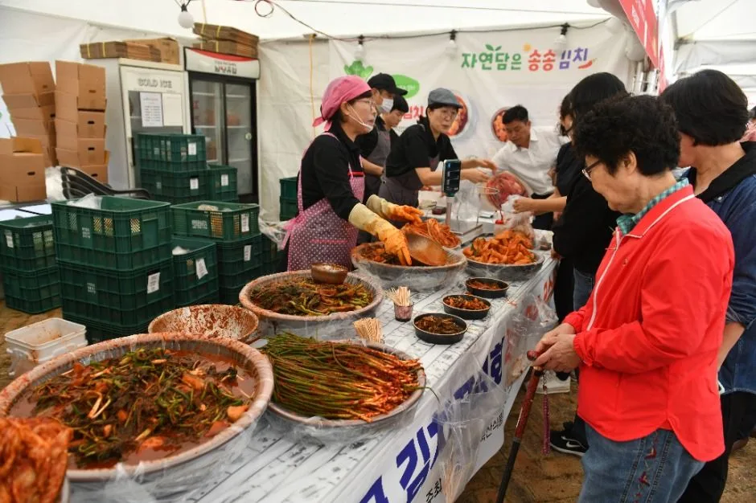
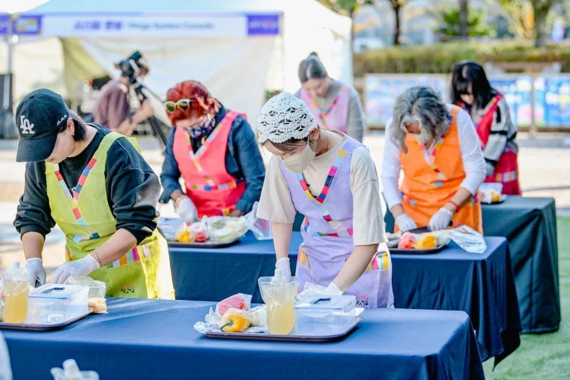
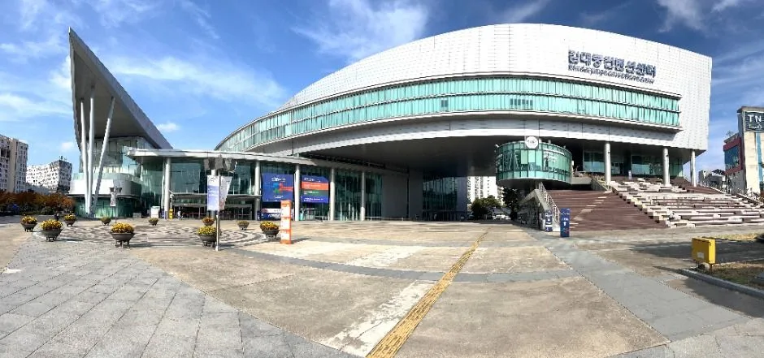
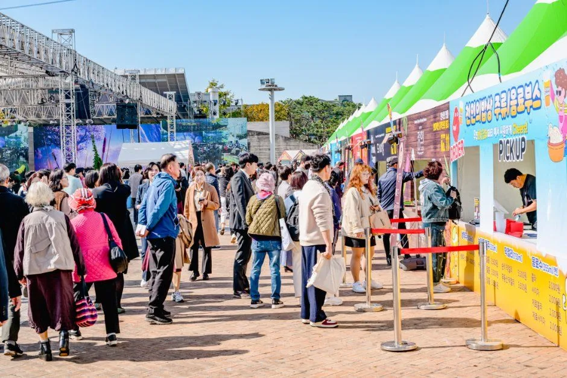
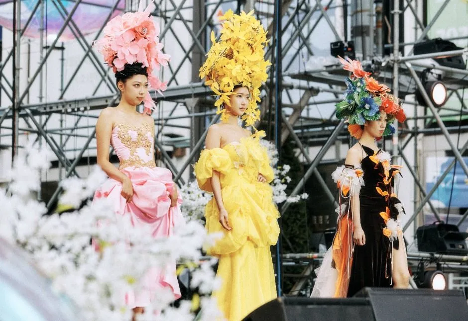
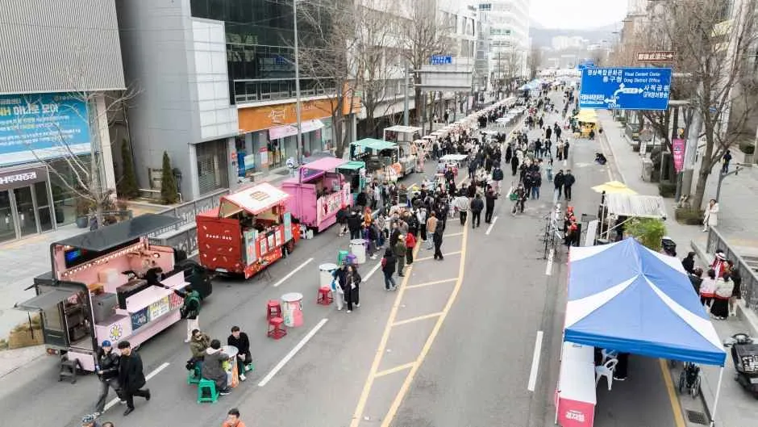
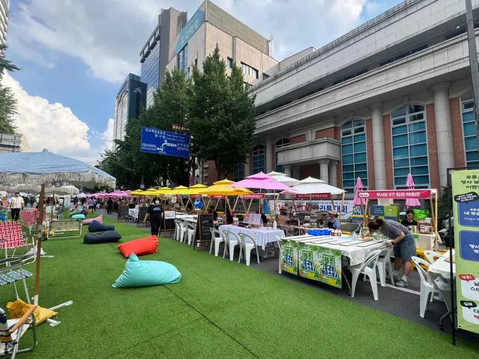
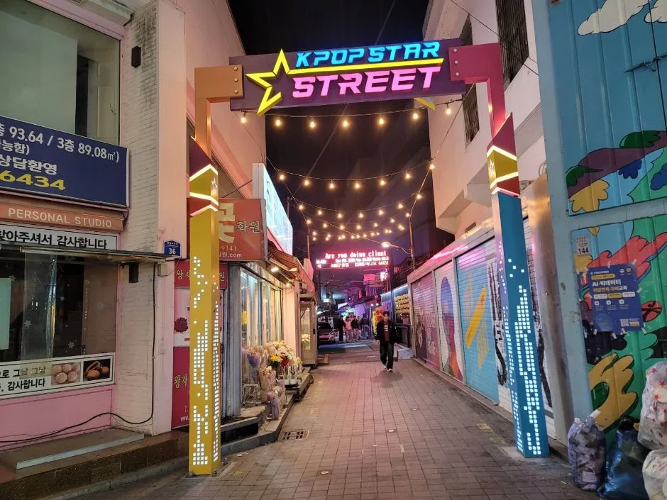
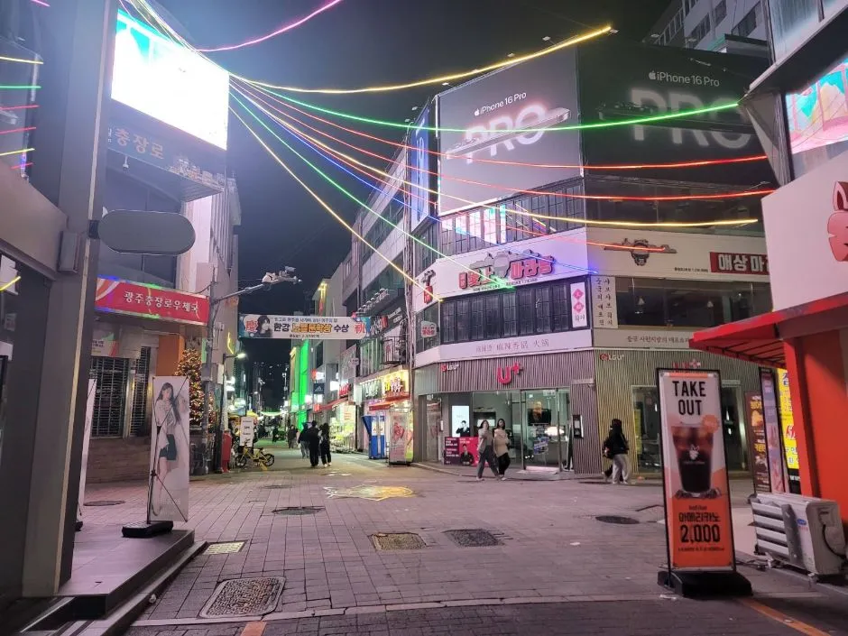
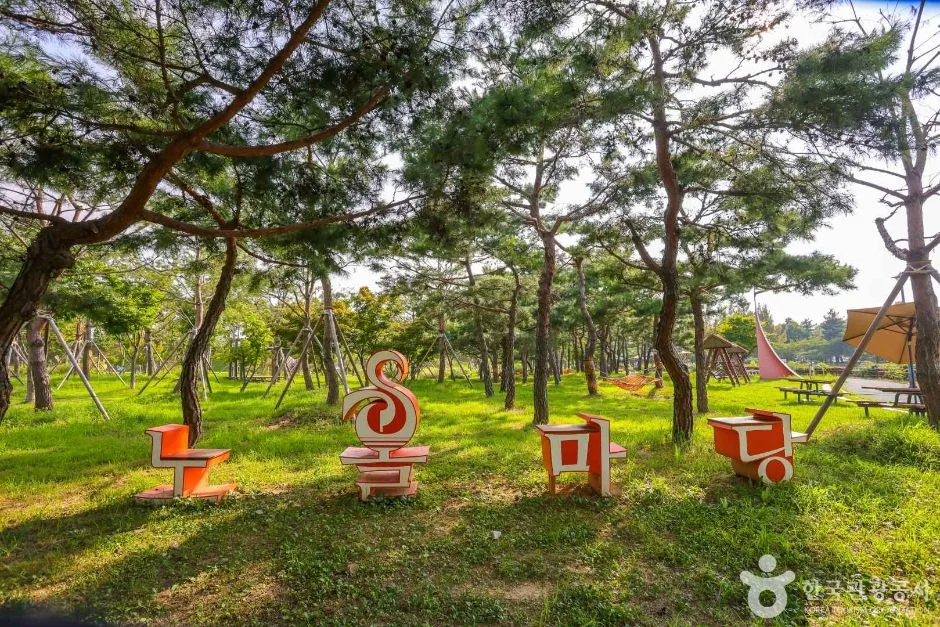

▲ 도심 광장에 관람객이 가득 모이는 광주김치축제 행사장 모습(지난 회차 자료 사진) 사진=한국관광공사
김치 한 포기 사러 갔다가 주차장만 한 시간 돈 경험, 광주 도심 축제에 가 본 사람이라면 낯설지 않을 것이다. 제33회 광주김치축제는 2026년 10월 23일(금)부터 25일(일)까지 사흘간 열리는데, 행사장이 시내 한복판 시청 광장이라 가장 큰 변수는 김치가 아니라 주차와 이동이다. 지하철역에서 걸어서도 25~30분이 걸린다고 안내되는 입지이기 때문에, 자차로 갈지 대중교통과 섞을지 미리 정해 두는 편이 낫다. 이 글은 공식 누리집과 언론 보도에서 확인되는 일정·장소를 기준으로, 자차 이동자 시선에서 주차장 후보와 환승 동선, 앞선 10월 7~11일 충장축제 일정까지 묶어 정리했다. 세부 시간표와 주차 운영 방식은 아직 공지되지 않아 확인하지 못한 부분은 그대로 표시했다.
1. 일정·장소 — 이름이 달라 헷갈리는 '시청'부터 정리
축제 장소는 시청 광장 일원(서구 내방로 111)이다. 다만 검색해 보면 '광주광역시청'과 '전남광주통합특별시청'이 섞여 나온다. 최근 언론 보도(더페어뉴스·현장뉴스 등)와 김치경연대회 모집 공고는 주최 주체를 '전남광주통합특별시'로 표기하고 있고, 행사장 주소는 서구 내방로 111로 같다. 반면 과거 회차 안내와 일부 블로그는 '광주광역시청'이라고 적는다. 즉 같은 청사를 다른 행정 명칭으로 부르는 것으로 보이며, 내비게이션에는 주소 '내방로 111' 또는 '시청'으로 입력하면 된다(행정명칭 변경 시점과 내비 앱별 표기는 확인하지 못했다).
| 항목 | 내용 |
|---|---|
| 회차 | 제33회(지난해 제32회: 2025년 10월 31일~11월 2일, 부제 '우주최강 김치파티') |
| 기간 | 2026년 10월 23일(금)~25일(일), 3일간 |
| 운영시간 | 10:00~20:00로 안내되나, 일자별 시간표는 확인하지 못했다 |
| 장소 | 시청 광장 일원, 서구 내방로 111(전남광주통합특별시청) |
| 입장료 | 무료(먹거리·굿즈·일부 체험은 유료) |
| 연계 행사 | 대한민국 김치경연대회 1차 10월 8일, 본 경연 10월 22일(광주김치타운 다목적체험관), 시상식 10월 23일, 수상작은 축제 기간 행사장 특별 전시 |
| 문의 | 광주김치축제 조직위 062-613-3955~7(공식 누리집 기재, 사무국은 서구 내방로 111 광주청사 8층) |
ℹ️ 김치경연 결승은 축제 전날, 장소도 다르다
공식 누리집의 대한민국 김치 경연대회 안내에 따르면 경연 장소는 광주김치타운 다목적체험관이고, 본 경연(2차)은 축제 전날인 10월 22일(목) 08:30~18:00이다(1차는 10월 8일 08:30~16:00). 축제는 23일부터이므로 '결승 현장'을 보러 시청 광장으로 가면 헛걸음이다. 시상식은 축제 개막일인 10월 23일로 안내돼 있고, 수상작은 23~25일 축제장에 특별 전시된다(전시 위치는 확인하지 못했다).
2. 무엇을 하나 — 지난 회차로 본 프로그램 구성

▲ 김치 판매 부스에서 시식과 구매가 이어진다(지난 회차 자료 사진) 사진=한국관광공사
제33회 세부 시간표는 확인하지 못했지만, 주요 구성은 일부 공개됐다. 보도·안내 기준 메인 프로그램은 천인의밥상(음식·먹거리 부스), K-김치파티, 광주스타쉐프 푸드쇼, 김치명인 푸드스테이지, 김치마켓이고, 부대 프로그램으로 김치 전시·판매·체험·문화공연이 준비된다. 아래는 참고용 지난 회차 구성이다. 제32회 때는 김치체험관, 김장놀이터(키즈), 김치 판매 장터, 대통령상 김치명인 시연 무대, 야간 조명과 불꽃놀이가 소개됐다. 올해 구성과 겹치는 부분이 있을 수 있으나 세부 내용은 달라질 수 있다.

▲ 체험 프로그램은 오전이 상대적으로 한산할 가능성이 있다(지난 회차 자료 사진) 사진=한국관광공사
체험 프로그램은 오전이 상대적으로 여유롭고 오후에 사람이 몰릴 가능성이 크다(공식 확인 사항은 아니며 도심 광장 행사의 일반적인 패턴에 따른 추정이다). 자차라면 오전 10시 개장 직후에 도착해 주차를 먼저 해결하고 체험을 앞쪽에 배치하는 편이 편하다.
3. 자차 주차 — 후보 3곳과 현실적인 전략

▲ 김대중컨벤션센터. 인근 공영주차장 후보지 중 하나로 안내된다 사진=한국관광공사
시청 광장 인근 주차 후보로 블로그·정보 사이트가 언급한 곳은 상무시민공원 공영주차장(서구 상무자유로 73, 일부 자료는 상무공원로 101로 표기). 한국관광공사 관광지 정보에서 상무시민공원 주소는 상무공원로 101로 조회된다, 김대중컨벤션센터 공영주차장(서구 치평동), 그리고 지난 회차 후기에 언급된 전남중학교 주차장이다. 이 정보는 모두 지난 회차 기준 블로그·정보 사이트가 언급한 후보일 뿐 공식 안내가 아니며, 제33회 전용 임시주차장·유료 여부·수용 대수는 공식 확인하지 못했다(2026년 9월 중순 기준 주차 정보 미확정으로 안내하는 매체도 있다). 시청 청사 자체 주차장이 행사 기간 일반 방문객에게 개방되는지도 확인하지 못했다.
| 후보 | 위치 | 확인된 내용 | 확인하지 못한 것 |
|---|---|---|---|
| 상무시민공원 공영주차장 | 서구 상무자유로 73(공원 주소는 한국관광공사 기준 상무공원로 101) | 블로그·정보 사이트가 언급한 후보 | 요금, 수용 대수, 행사장까지 정확한 거리 |
| 김대중컨벤션센터 공영주차장 | 서구 치평동 | 블로그·정보 사이트가 언급한 후보 | 요금, 행사장까지 거리, 당일 컨벤션 일정(겹치면 혼잡 가능성) |
| 전남중학교 주차장 | 시청 인근(정확한 주소 미확인) | 지난 회차 후기에서 언급된 후보 | 올해 개방 여부, 운영 방식 |
| 시청 청사 주차장 | 내방로 111 | - | 행사 기간 일반 개방 여부 |
✅ 자차 방문자 주차 전략
· 금요일(23일) 오전이나 평일 낮 시간대가 가장 여유로울 가능성이 크다(추정)
· 주말 오후는 도심 행사 특성상 주변 도로 정체를 각오해야 한다
· 행사장 코앞 진입을 고집하기보다 후보 주차장 두 곳 이상을 내비에 즐겨찾기 해 두고 만차 시 바로 옮기자
· 임시 셔틀 운행 여부는 확인하지 못했다. 공식 누리집 공지를 출발 전날 다시 보자
4. 대중교통 환승 — 지하철만으로는 생각보다 멀다

▲ 인기 부스 앞 대기 줄. 도보 이동 거리를 감안해 짐을 줄이는 편이 좋다(지난 회차 자료 사진) 사진=한국관광공사
공식 오시는 길 안내(검색 요약 기준)는 상무역 4번 출구 또는 운천역 3번 출구에서 도보 약 25~30분이다. 가볍게 걷기엔 부담스러운 거리라 버스 환승이 현실적이다. 시청 인근 정류소에는 금호46, 매월16, 운림50, 일곡38, 지원25, 지원45, 첨단22번 등이 정차한다고 안내되며, 한국은행·상무중흥아파트 정류소도 가깝다. 다만 노선 번호와 배차 간격은 개편될 수 있으니 출발 전 지도 앱에서 확인하는 것이 안전하다.
| 방식 | 장점 | 단점·유의 |
|---|---|---|
| 자차 + 공영주차장 | 구매한 김치 운반이 편함 | 주말 만차·정체 가능, 전용 주차장 미확인 |
| 지하철 + 도보 | 정체 없음 | 역에서 25~30분 도보, 김치 박스 들고 이동 어려움 |
| 지하철 + 시내버스 | 도보 구간 단축 | 노선·정류장 사전 확인 필요 |
| 외곽 주차 후 지하철 | 도심 정체 회피 | 외곽 주차장 요금·운영은 별도 확인 |
김치를 많이 살 계획이라면 이동 수단이 곧 구매량을 좌우한다. 자차 방문자는 아이스박스와 보냉백을 트렁크에 미리 싣고, 구매는 마지막 코스로 미루는 편이 좋다. 상온에 오래 두면 맛이 변하기 쉽다.
5. 충장축제 — 10월 7~11일 도심 교통 변수

▲ 충장축제의 꽃 장식 패션 퍼레이드 장면(지난 회차 자료 사진) 사진=한국관광공사
▲ 충장축제 야간 공연 장면. 금남로 일대에 관객이 빽빽이 모인다(2025년 회차 자료 사진) 사진=한국관광공사
김치축제 보름 전쯤인 제23회 광주 추억의 충장축제는 2026년 10월 7일(수)~11일(일) 5일간 금남로·충장로·예술의 거리·5·18민주광장 일원에서 열린다. 주제는 '추억의 노래'이고 날짜별로 개막의 날, 세대공감의 날, 아시아 문화의 날, 행진의 날 Ⅰ·Ⅱ로 구성된다. 같은 기간 광주버스킹월드컵(10월 7~11일)도 열린다고 소개됐다. 10월 1일자 보도(남도일보·전남일보·브릿지경제 등)에 따르면 교통통제는 축제 개막 사흘 전부터 시작된다.
| 구간 | 통제 기간·방식 |
|---|---|
| 금남로 전일빌딩245~금남로공원(주무대 구간) | 10월 4일 15시~12일 06시 차량 전면 통제, '차 없는 거리' 운영 |
| 금남로4~5가(퍼레이드 구간) | 10월 8일 23시~11일 22시 일부 차로 통제, 양방향 1~2개 차로는 통행 허용 |
| 예술의 거리·국립아시아문화전당·충장로4~5가 | 프로그램 일정에 맞춰 시간대별 통제 |
통제 구간에는 방호벽과 철제 펜스, 안전 인력이 배치되고 야간에는 LED 경고등이 설치된다고 한다. 동구는 우회 이용을 권고하고 있으니 해당 시간대에는 금남로를 피해 우회하는 편이 낫다. 10월 2일 기준으로 다시 확인한 지역 매체 보도(전남일보·전남매일·광남일보 등)도 통제 구간·시간이 위 내용과 같고, 시내버스는 우회 노선으로 운행하며 정류장마다 우회 안내문을 붙인다고 전한다(우회 노선 번호는 확인하지 못했다). 시간·구간은 변경될 수 있어 광주 동구청 공지로 최종 확인하자.

▲ 금남로가 차 없는 거리로 바뀐 모습. 충장축제 통제 구간과 같은 금남로이나 별도의 2026년 보행 행사 사진이다 사진=한국관광공사

▲ 차도 위에 부스와 휴게 공간이 들어서면 승용차는 진입할 수 없다. 축제 기간 금남로 풍경도 비슷할 것으로 보이나 추정이다 사진=한국관광공사
| 가는 곳 | 내비에 넣을 주소 | 자차 메모 |
|---|---|---|
| 김치축제 행사장(시청 광장) | 서구 내방로 111 | 10월 23~25일. 충장축제 통제와는 무관한 서구 상무지구 |
| 금남로공원·전일빌딩245 | 동구 금남로 245 | 10월 4일 15시~12일 06시 차량 전면 통제 구간 안쪽 |
| 충장로 케이팝 스타의 거리 | 동구 충장로 94(충장로2가) | 통제 구간 인접. 승용차는 외곽 주차 후 도보 권장 |
| 국립아시아문화전당(ACC) | 동구 문화전당로 38 | 시간대별 통제 대상 구간에 포함된다고 보도됨 |
| 광주김치타운 | 남구 김치로 60(임암동) | 10월 22일 김치경연 본 경연 장소. 일반 관람은 09:00~18:00, 월요일 휴관 |
| 행사 | 기간 | 장소 | 자차 포인트 |
|---|---|---|---|
| 제23회 추억의 충장축제 | 10월 7일(수)~11일(일) | 금남로·충장로·예술의 거리·5·18민주광장 | 금남로 전일빌딩245~금남로공원 10/4 15시~10/12 06시 전면 차단, 금남로4~5가 10/8 23시~10/11 22시 일부 차로 제한 |
| 광주버스킹월드컵 | 10월 7일~11일(소개 기준) | 도심(상세 장소 미확인) | 충장축제와 겹치는 시기 |
| 제33회 광주김치축제 | 10월 23일(금)~25일(일) | 시청 광장, 서구 내방로 111 | 서구 상무지구 주차 후보 중심 |

▲ 충장로 케이팝 스타의 거리. 충장축제 때 사람이 몰리는 골목 중 하나 사진=한국관광공사
충장로 일대는 평소에도 주차 공간이 적어 축제 기간 승용차 진입은 권하기 어렵다. 이 구간은 대중교통을 우선하고, 자차라면 도심 외곽에 세운 뒤 걸어 들어오는 편이 낫다. 충장로 주변 공영주차장 현황과 요금은 이번 조사에서 확인하지 못했다.

▲ 네온 간판이 켜진 금남로 일대 골목 야경. 축제 저녁 시간대에는 보행자가 늘어난다(평상시 자료 사진) 사진=한국관광공사
6. 인근 코스 — 시장·양림동, 김장 재료까지 이어 붙이기

▲ 상무시민공원. 주차 후보지로 안내되는 공원이며 산책 겸 이동하기 좋다 사진=한국관광공사
상무시민공원에 주차했다면 행사장까지 걷는 구간이 산책 겸 이동이 된다. 하루를 더 길게 쓸 계획이라면 다음 기사의 코스와 이어 붙일 수 있다. 다음 기사의 코스는 서구 상무지구와 생활권이 달라 이동 수단을 미리 정해 두자.
- 광주 양림동·1913송정역시장 하루 코스 — 축제 전후로 골목·시장 구경을 더하고 싶을 때
- 11월 김장 절임배추 직거래 비교 — 축제에서 맛본 뒤 김장 재료를 직접 주문하고 싶을 때
7. 두 축제를 모두 갈 때 — 코스·시간대·날씨 대비
충장축제(동구)와 김치축제(서구)는 같은 도시 안이지만 생활권이 달라 한 번에 묶기 어렵다. 직선으로도 거리가 있어 차로 이동하면 교통 상황에 따라 20~30분 이상 걸릴 것으로 보이며(추정), 두 축제는 날짜도 겹치지 않으므로 하루씩 따로 잡는 편이 현실적이다.
| 상황 | 대응 | 구분 |
|---|---|---|
| 충장축제 기간 금남로 통과 | 전일빌딩245~금남로공원은 10월 4일 15시~12일 06시 진입 불가, 우회 도로 이용 | 확인(동구 보도) |
| 퍼레이드 날 금남로4~5가 | 10월 8일 23시~11일 22시 일부 차로 통제, 1~2개 차로만 통행 | 확인(동구 보도) |
| 충장축제 저녁 공연 시간대 | 사람이 가장 몰려 도로·주변 주차장 모두 혼잡할 가능성이 크다 | 추정 |
| 김치 구매 후 이동 | 보냉백·아이스박스를 트렁크에 두고 구매는 마지막 코스로 | 일반 상식 |
| 비 오는 날 | 야외 광장 행사는 우천 시 프로그램이 조정될 수 있으니 당일 공식 누리집 공지 확인. 충장축제 인근에서는 실내 관람 코스(전일빌딩245, 국립아시아문화전당)로 시간을 보낼 수 있다 | 우천 시 운영 방침은 확인하지 못함 |
| 귀가 정체 | 도심 행사는 저녁 폐장 직후 출차가 몰리므로 폐장 30분 전 출발이나 식사 후 늦은 출차가 낫다 | 추정 |
축제장 주변에 차를 오래 세워 두는 경우의 주의점은 축제장 주차의 함정 기사에, 가을 주말 도로 혼잡 시간대는 단풍철 고속도로 최적 출발시각 데이터 기사에 정리돼 있다. 광주 시내를 벗어난 가을 산책 코스가 필요하면 광주 충효동 왕버들과 광주호 호수생태원 기사도 참고할 만하다.
✅ 광주 가을 축제 방문 체크리스트
· 충장축제: 10월 7일(수)~11일(일), 금남로·충장로 일원, 금남로 전일빌딩245~금남로공원 10/4 15시~12일 06시 전면 통제(보도 기준)
· 김치축제: 10월 23일(금)~25일(일), 시청 광장(서구 내방로 111), 무료 입장
· 김치경연 본 경연은 10월 22일 광주김치타운 다목적체험관(공식 누리집, 축제장 아님), 시상식은 10월 23일
· 주차 후보: 상무시민공원·김대중컨벤션센터 공영주차장(요금·수용 미확인)
· 지하철역에서 도보 25~30분, 버스 환승 권장
· 보냉백과 아이스박스 준비, 구매는 마지막에
8. 요약
제33회 광주김치축제는 2026년 10월 23~25일 시청 광장(서구 내방로 111)에서 열리며 입장은 무료다. 최근 보도는 장소를 '전남광주통합특별시청'으로 표기하지만 주소는 같다. 지하철역에서 도보 25~30분이라 자차 또는 버스 환승이 현실적이고, 주차 후보는 상무시민공원·김대중컨벤션센터 공영주차장이다. 충장축제는 10월 7~11일 금남로·충장로 일원에서 열리며, 금남로 전일빌딩245~금남로공원은 10월 4일 15시부터 12일 06시까지 차량이 전면 통제된다(보도 기준). 김치경연 본 경연은 축제 전날 광주김치타운(남구 김치로 60)에서 열리니 장소를 헷갈리지 말자.
제33회 세부 시간표, 전용 주차장, 셔틀 운행 여부는 확인하지 못했다. 방문 전 공식 누리집과 동구청 공지를 확인하자.